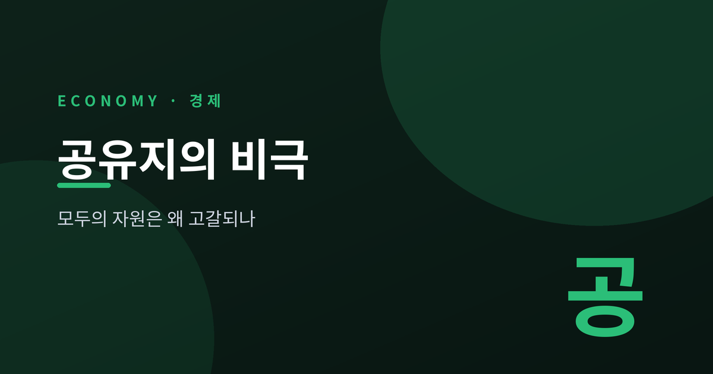
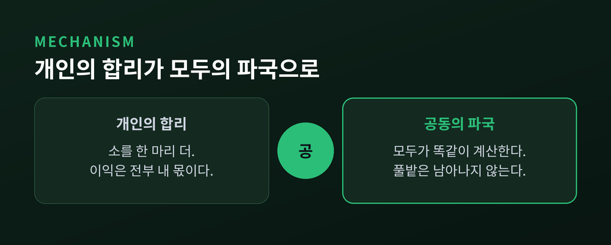
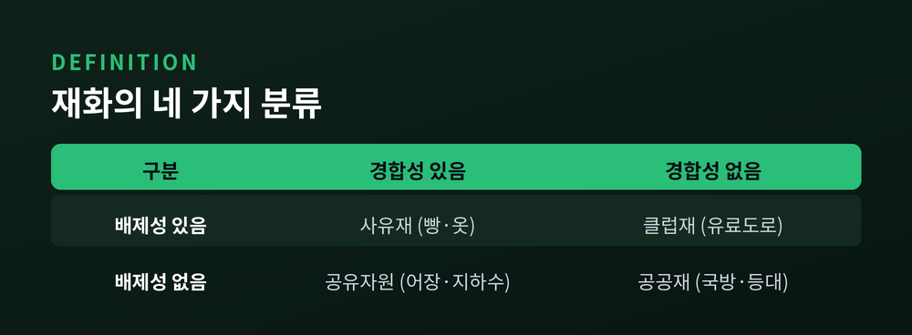
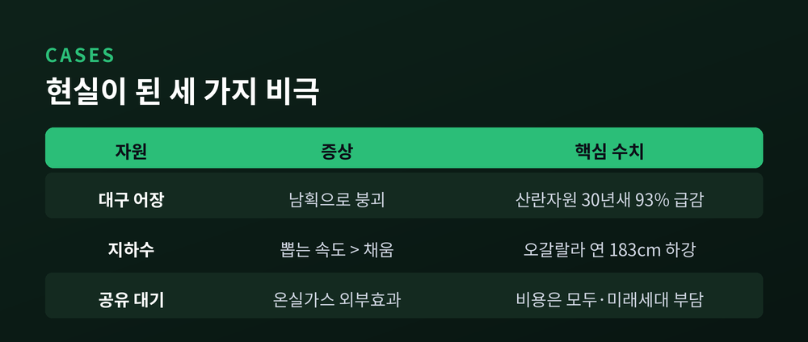
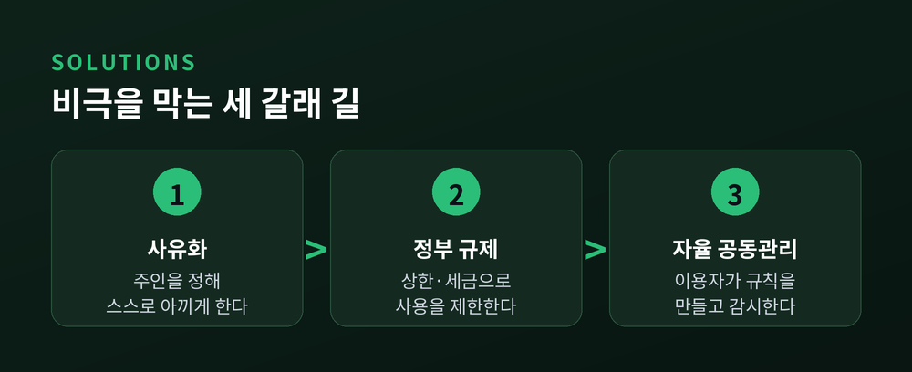
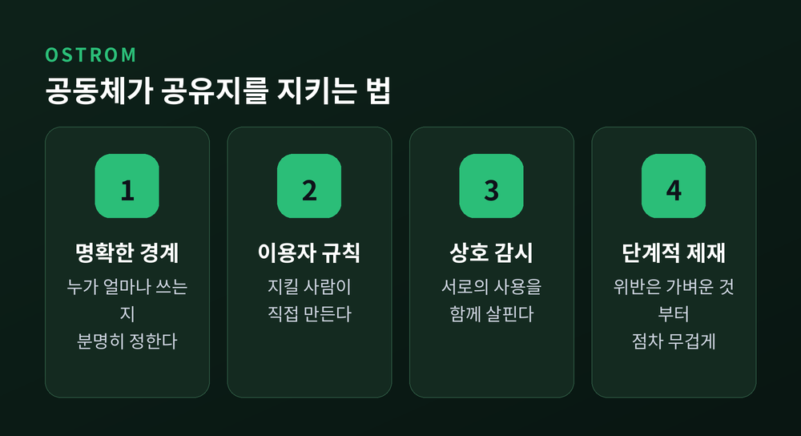

이번 글에서는 경제학의 오랜 화두인 공유지의 비극을 정리해 보겠습니다.
먼저 결론부터 말씀드립니다. 공유지의 비극은 누구나 쓸 수 있고, 쓰면 줄어드는 자원에서 벌어집니다. 각자에게 합리적인 선택이 모이면, 자원은 모두의 손해로 고갈됩니다. 다만 이 비극은 운명이 아닙니다. 규칙과 감시, 그리고 공동체의 약속이 있으면 막을 수 있습니다.
목초지의 우화에서 시작해, 공유자원의 정의와 고갈의 원리, 실제 사례, 그리고 세 갈래의 해법까지 차례로 짚어 보겠습니다.
1968년, 생태학자 개릿 하딘은 과학 학술지 사이언스에 짧은 글 하나를 실었습니다. 제목이 "공유지의 비극"이었습니다.
이야기는 소박합니다. 여러 목동이 하나의 공동 목초지를 함께 씁니다. 한 목동이 소를 한 마리 더 풀어놓습니다. 그 소가 주는 이익은 온전히 자기 몫입니다. 반면 풀밭이 상하는 손해는 모든 목동이 나눠 집니다.
그러니 각자에게는 소를 계속 늘리는 편이 언제나 이득입니다. 모두가 똑같이 계산합니다. 결국 풀밭은 남아나지 않습니다.
하딘은 이렇게 적었습니다.
공유지에서의 자유가 모두에게 파멸을 가져온다.
개인은 어리석지 않았습니다. 저마다 가장 합리적으로 움직였을 뿐입니다. 그런데 그 합리들이 모여 공멸이라는 비합리로 끝납니다. 이것이 비극이라 불리는 이유입니다.

비극이 왜 하필 이런 자원에서 벌어지는지 보려면, 재화의 성질부터 나눠야 합니다.
경제학은 재화를 두 가지 잣대로 구분합니다. 하나는 배제성입니다. 돈을 내지 않은 사람의 사용을 막을 수 있는가입니다. 다른 하나는 경합성입니다. 한 사람이 쓰면 다른 사람 몫이 줄어드는가입니다.
이 둘을 엇갈리면 네 종류의 재화가 나옵니다. 빵이나 옷은 사유재입니다. 값을 치른 사람만 갖고, 내가 먹으면 남의 몫이 없습니다. 국방이나 등대는 공공재입니다. 막을 수도 없고, 내가 누려도 남의 몫이 줄지 않습니다.
공유자원은 그 사이에 있습니다. 배제성은 없는데 경합성은 있는 재화입니다. 누구나 들어와 쓸 수 있지만, 쓰면 줄어듭니다. 어장의 물고기, 땅속의 지하수, 마을의 목초지가 여기에 속합니다.
바로 이 어긋난 조합이 문제의 씨앗입니다. 막을 수 없으니 너도나도 들어오고, 줄어드니 먼저 차지하려 다툽니다.

고갈의 뿌리에는 외부효과가 있습니다.
외부효과란 내 행동의 비용을 엉뚱한 제3자가 대신 치르는 것을 말합니다. 물고기를 한 마리 더 잡을 때, 이익은 온전히 제 것입니다. 그러나 자원이 줄어드는 손해는 모든 어민이 나눠 집니다. 내가 지는 몫은 아주 작습니다. 그래서 개인은 계속 더 잡습니다.
이 구조를 게임이론은 죄수의 딜레마라고 부릅니다.
어느 어부의 속마음을 들여다볼까요. "남들이 자제한다면, 바다에 여유가 있으니 나는 몇 마리 더 잡는 게 낫다. 남들이 마구 잡는다면, 사라지기 전에 나라도 서둘러 잡아야 한다." 어느 쪽이든 답은 하나입니다. 더 잡는다.
모두가 이 계산을 따릅니다. 그 결과 도달하는 균형은 '전원 남획'입니다. 협력했다면 모두가 오래 누렸을 자원을, 아무도 협력하지 않아 함께 잃습니다.
개인적으로 똑똑한 선택이 모여 집단적으로 어리석은 결말에 이릅니다. 공유지의 비극은 이 역설의 다른 이름입니다.
이론만의 이야기가 아닙니다. 세 개의 현실을 보겠습니다.
첫째는 어장입니다. 캐나다 뉴펀들랜드의 대구 어장은 교과서적 사례입니다. 산란 자원량이 30년 만에 약 93퍼센트 무너졌습니다. 1962년 160만 톤이던 것이 1992년에는 10만 톤 안팎으로 줄었습니다. 결국 1992년 조업이 전면 중단되었습니다. 2년 예정이던 조치는 32년간 이어졌고, 직접 일자리만 1만9천 개가 사라졌습니다.
둘째는 지하수입니다. 미국의 오갈랄라 대수층은 여덟 개 주에 걸친 거대한 지하 물창고입니다. 그런데 수위가 해마다 약 183센티미터씩 내려가는데, 자연이 다시 채우는 양은 연 2.5센티미터도 안 됩니다. 뽑는 속도가 채우는 속도의 수십 배입니다. 인도 펀자브에서는 우물의 78퍼센트에서 물이 줄었습니다.
셋째는 대기입니다. 하늘은 인류 전체가 함께 쓰는 궁극의 공유지입니다. 온실가스를 내뿜는 쪽은 그 이익을 사적으로 챙기고, 기후변화의 청구서는 인류 전체와 다음 세대가 나눠 받습니다. 목초지의 우화가 지구 규모로 되풀이되는 셈입니다.

다행히 비극은 정해진 결말이 아닙니다. 사람들은 오래전부터 세 갈래의 길을 찾아 왔습니다.
첫째는 사유화입니다. 공유지를 나눠 주인을 정하는 방법입니다. 주인은 자기 자산의 미래 가치를 지키려 스스로 아껴 씁니다. 어업의 개별 어획 할당제가 대표적입니다. 다만 대기나 바다처럼 나눌 수 없는 자원에는 쓰기 어렵습니다.
둘째는 정부 규제입니다. 하딘이 "서로 합의한 강제"라 부른 방식입니다. 국가가 상한과 쿼터, 세금과 면허로 사용을 제한합니다. 탄소가격제나 배출권 거래가 여기에 속합니다. 다만 적정선을 알기 어렵고, 감시 비용이 들며, 지구 전체를 강제할 세계정부는 없습니다.
셋째는 공동체의 자율 관리입니다. 이용자들이 스스로 규칙을 만들고 서로 감시하는 길입니다. 오랫동안 학계는 앞의 두 가지, 즉 사유화 아니면 국가 규제만이 답이라 여겼습니다. 그런데 그 통념을 뒤집은 사람이 있었습니다.

엘리너 오스트롬은 정치학자였습니다. 그는 전 세계 800건이 넘는 공동관리 사례를 발로 뛰며 모았습니다.
그가 찾아낸 것은 놀라웠습니다. 스위스의 알프스 목초지는 1224년의 마을 규약으로 지금껏 유지됩니다. 스페인 발렌시아의 관개 수로, 일본 마을의 공유 산림도 수백 년을 버텼습니다. 국가가 강제하지도, 사유화하지도 않았는데 말입니다.
비결은 몇 가지 조건에 있었습니다. 누가 얼마나 쓸 수 있는지 경계가 분명해야 합니다. 규칙은 그것을 지킬 사람들이 직접 만들어야 합니다. 서로를 감시하되, 위반은 가벼운 것부터 단계적으로 벌해야 합니다. 그리고 다툼을 값싸게 풀 창구가 있어야 합니다.
오스트롬은 이 발견으로 2009년 노벨경제학상을 받았습니다. 여성으로서는 최초의 경제학상이었습니다.
그의 조언은 기후 문제에도 이어집니다. 전 지구적 협약 하나에만 기대지 말고, 도시와 지방, 기업과 시민이 각자의 층위에서 동시에 움직이라는 것입니다. 하나의 큰 손이 아니라, 여러 개의 작은 손이 함께 지키는 방식입니다.

정리하면 이렇습니다.
공유지의 비극은 자원 자체의 문제가 아니라, 그것을 함께 쓰는 우리의 약속이 빠졌을 때 생기는 문제입니다. 막을 수 없고 줄어드는 자원 앞에서, 각자의 합리는 쉽게 공멸로 향합니다.
그러나 하딘이 던진 비관에 오스트롬은 조건이라는 답을 얹었습니다.
모두의 것은, 모두가 규칙을 나눌 때 비로소 지켜집니다.
다시 목초지로 돌아가 봅니다. 소를 한 마리 덜 풀어놓는 절제가 어리석은 손해가 아니라 현명한 약속이 되려면, 결국 우리에게 필요한 것은 서로를 향한 신뢰일지도 모릅니다.